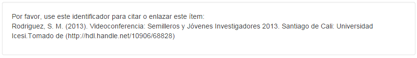
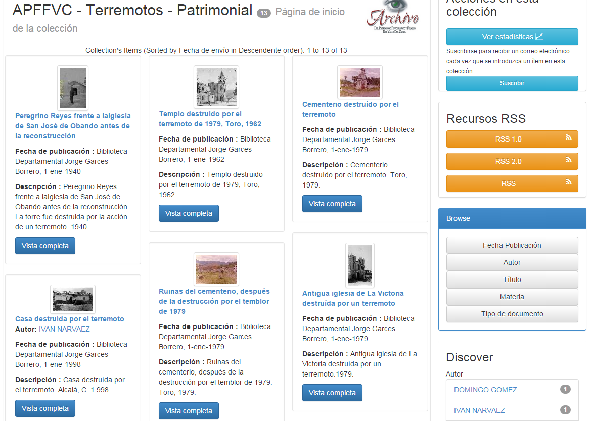
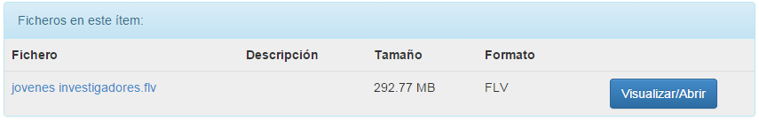
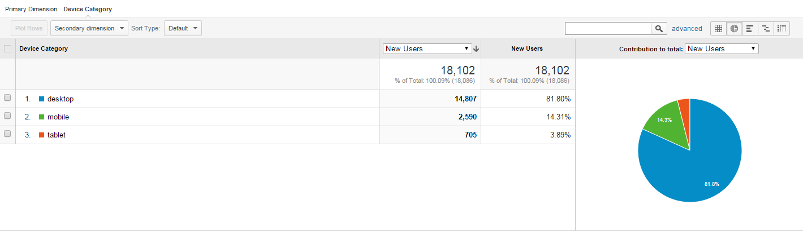
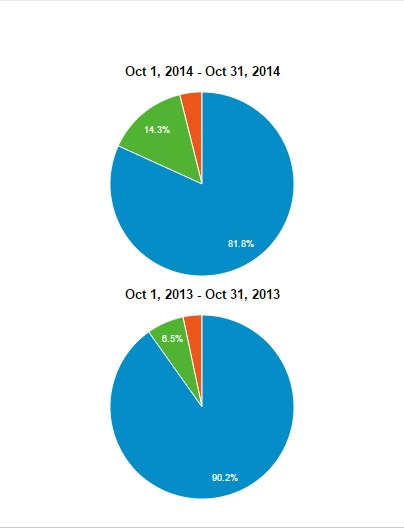
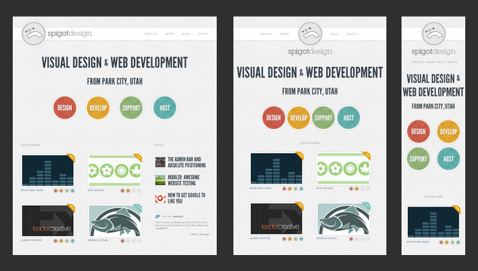

Experiencia de usuario
Una herramienta de visibilidad para bibliotecas Digitales
Presentado por David Andrés Manzano Herrera / @damanzanoh
Buenas prácticas
En ocasiones olvidamos hacernos una pregunta importante
¿Quienes utilizan la información del repositorio?
Los usuarios
Son parte de una generación que vive la era digital o que se ha acostumbrado a ella
Repositorio Digital ≡ Sitio Web
- Difundir contenido a través de internet
- Son visitados a través de un navegador web
- Usuarios con características similares
La apariencia importa
A los usuarios les gusta compartir
Compartir desde el repositorio
Dar herramientas a los usuarios
¿Cómo citar este item?
Integración con Gestores de referencias
Imágenes
Videos
Hay que estar en la web móvil
¿Desde cuales dispositivos se puede ver al repositorio actualmente?¿Por qué?
El tráfico a sitios web para móviles creció 600% en 2010, se presume que para este año (2011) se habrá triplicado
El acceso desde moviles se ha incrementado rápidamente del 18.76% al 30.65% durante el último año
| Worldwide device shipments by segment (millions of units) according to Gartner Gartner | |||
| Type of device | 2013 sales | 2014 sales | 2015 sales |
| PCs desktop / laptop | 296.1 | 276.7 | 263.0 |
| Tablets (ultramobile) | 195.4 | 270.7 | 349.1 |
| Mobile phones | 1,807.0 | 1,895.1 | 1,952.9 |
| Other ultramobiles (hybrid and clamshell) | 21.1 | 37.2 | 62.0 |
| Total | 2,319.6 | 2,479.8 | 2,627.0 |
| Source: © Gartner (March 2014) | |||
Via: © mobiThinking
Source: StatCounter Global Stats - Platform Comparison Market Share
Nuevos usuarios Biblioteca Digital Icesi
2013 Vs 2014
¿cómo abordar la web móvil?
Apps
- Facilidad de implementación
- Más funcionalidades (hardaware)
El ecosistema móvil es más amplio de lo que creemos
Responsive web design
Los móviles son la punta del iceberg
Resultados
- Galardón a mejor repositorio institucional (2011)
- Primeros puestos a nivel naciaonal en le ranking de Webometrics
- Mayor uso del repositorio por parte de los estudiantes
- Aumento del número de visitas externas
¿Qué se necesita y como lograrlo?
- Ver el repositorio como un sitio web
- Medios de comunicación con el usuario
- Asignar los recursos necesarios